Viernes
Al salir del cole fuimos corriendo a la piscina, me encanta ir y quería enseñársela a Popy.
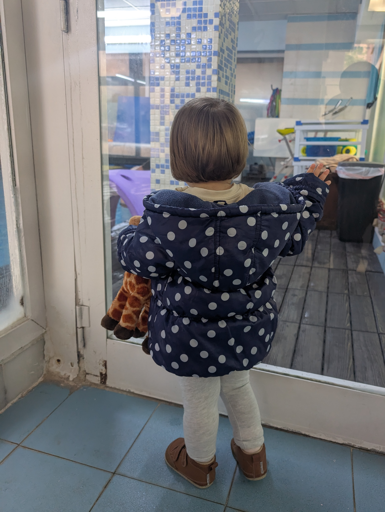¡Me cambié corriendo para ir la piscina! Popy también quería venir pero papá no podía con las dos 😔
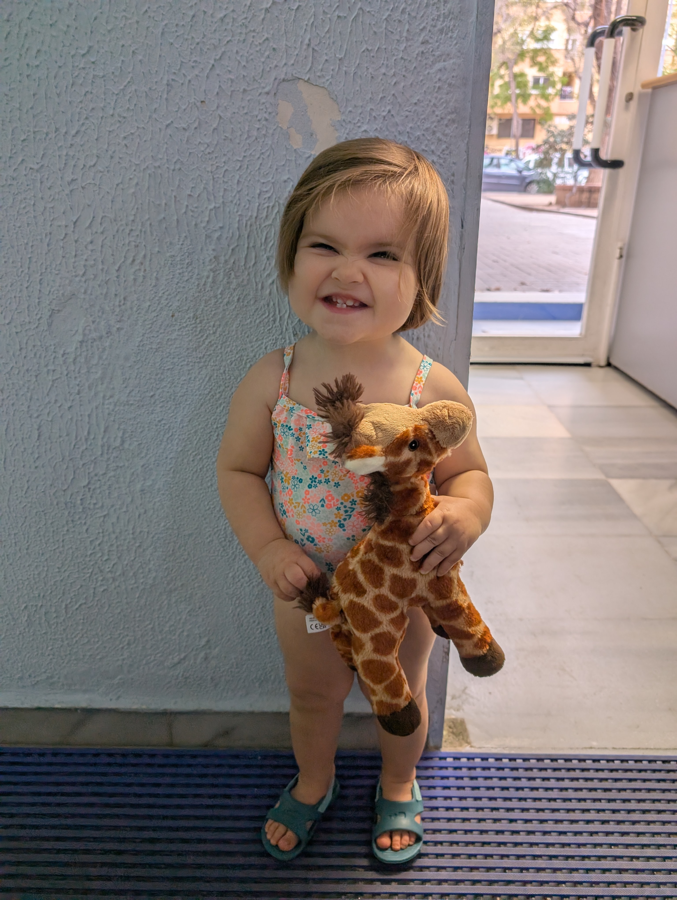Después en casa tenía una cena muy rica, la compartí con Popy y nos gustó mucho.
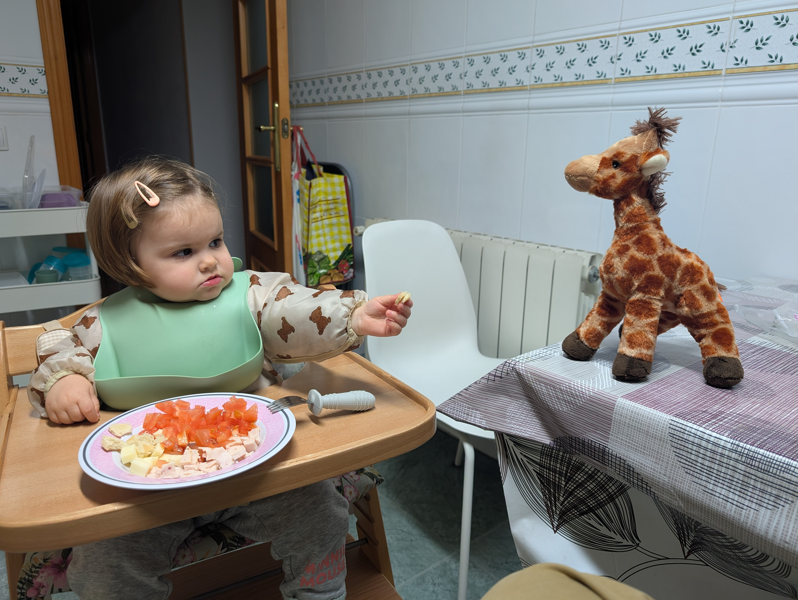Sábado
Hoy teníamos muchas cosas que hacer ¡Así que papá nos preparó tortitas para coger fuerzas! ¡ñam! 😋
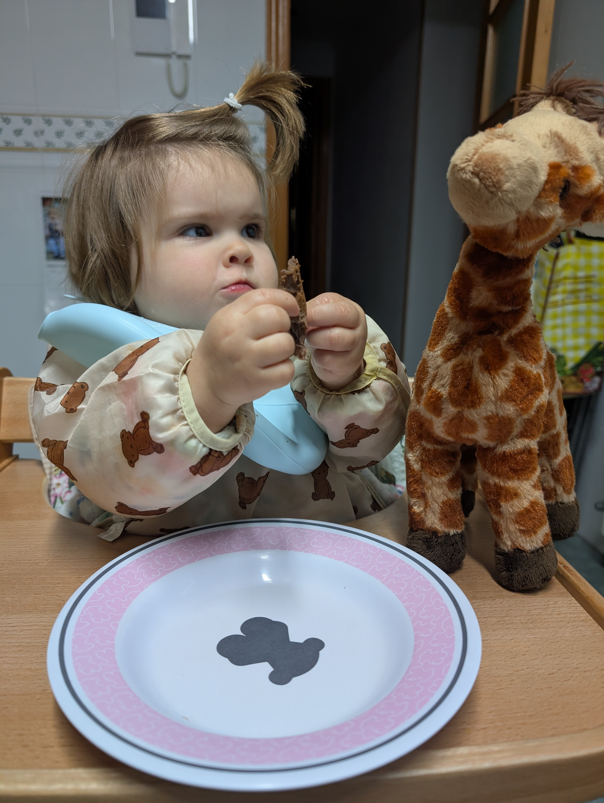Luego estabamos jugando ¡Pero mis papás nos hicieron parar! ¡Me enfadé mucho! 😭
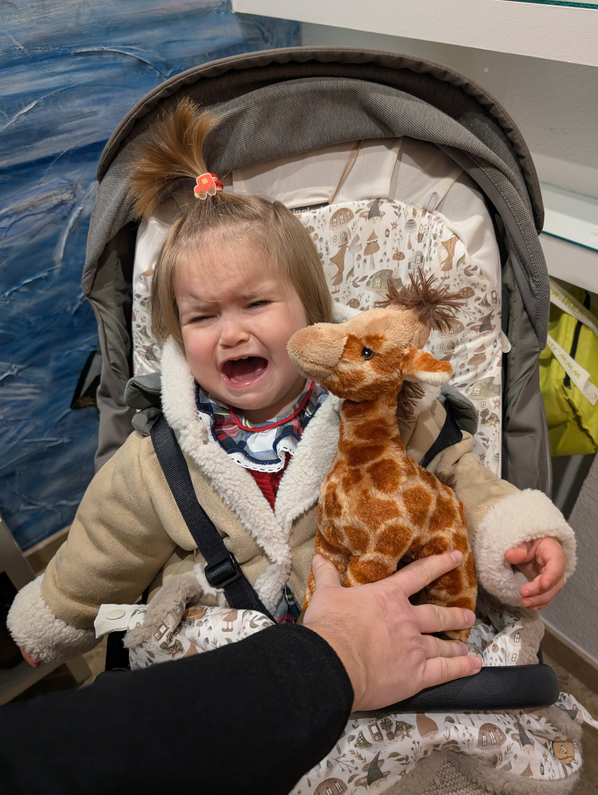¡Ay! ¡Pero que vamos a pasear a la playa y al cumple de mi abuelita! ¡Qué bien!
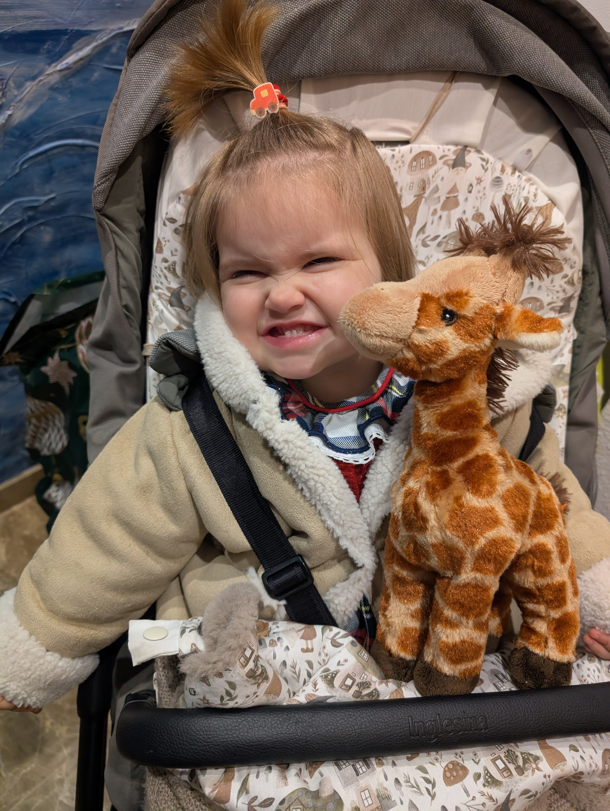Primero fuimos al parque, quería enseñarle a Popy los columpios que más me gustan.
Después en la playa queríamos ir a la arena ¡Pero mamá no me dejaba! Decía que iba demasiado guapa, pero si siempre voy guapa...

Luego nos escapamos y salimos corriendo hacia el restaurante, teníamos mucha hambre, aunque no conseguimos despistar a mi tía Miriam.
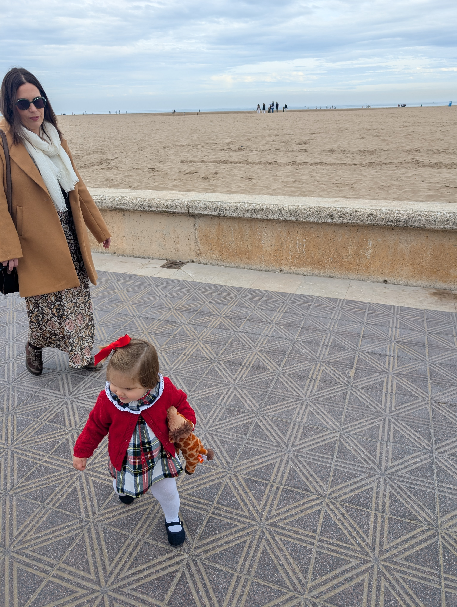En el restaurante estuvimos jugando con mi tío David y mamá y luego ellos me dieron la comida.

Por la tarde fuimos al cumple de mi amiga Lucía ¡Que cumplía 2 años! ¡Qué mayor es ya!
En el cumple nos dieron sandwich, estaba muy rico, nos gustó mucho a las dos. Cuando Popy se cansó de comer empezó de fiesta. ¡Lo daba todo! 🎉 🎊 🥳

Después estuvimos pintando una mochila, mis papás me pusieron el babero del cole y todo (pero no el mío, uno que me dio mi amiga Valeria)
Popy tuvo un pequeño accidente con la pintura azul... ¡Pero papá le dio una ducha y como nueva!
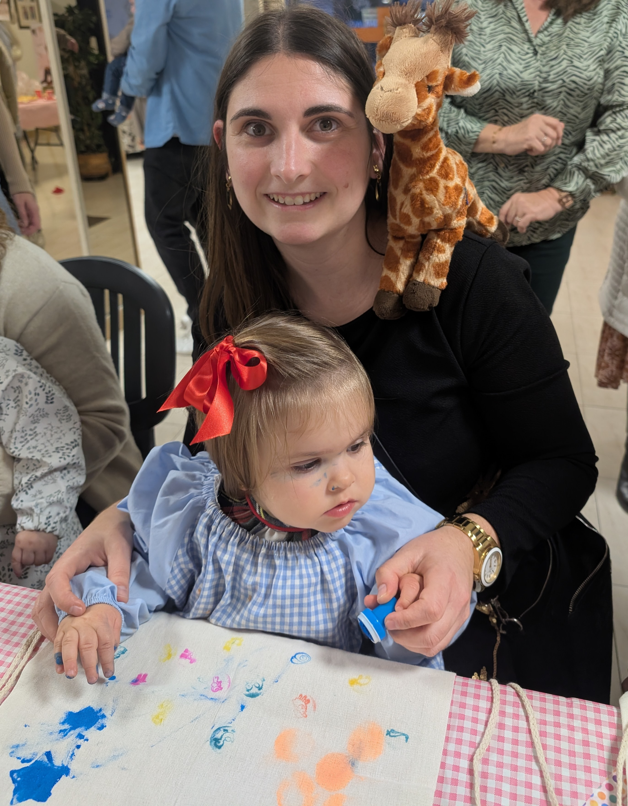Domingo
Empezamos el domingo prontito, mis papás nos montaron en el coche, me dijeron que íbamos a ver animales.
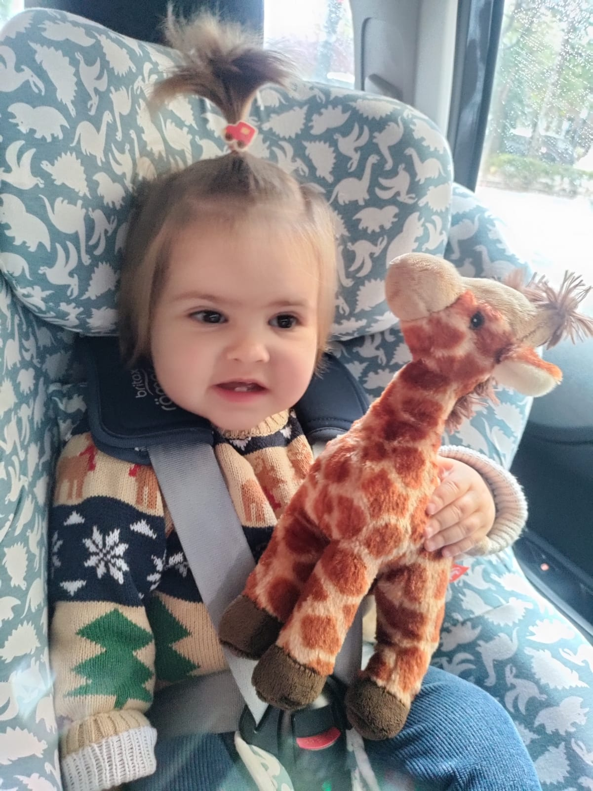¡Alaaaa! Resulta que nos trajeron a un sitio que se llama Bioparc y está lleno de animalitos 🦁🦒🐘🦛🐒
Lo primero que buscamos fueron las 🦒jirafas🦒, Popy quería presentarme a sus amigas.
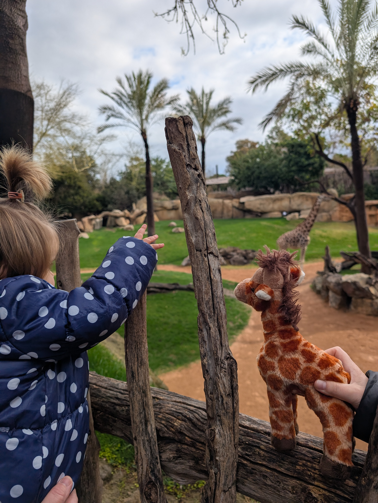Me estuvo contando muchas cosas sobre ellas, tantas que al final ya sabía hasta imitar como comían.

Luego estuvimos viendo más animales y Popy me contaba muchas curiosidades de ellos, había 🦁leones🦁 con sus amigas jirafas de fondo. ¡Qué miedo!


¡Me encontré una hoja muy guay! ¡Ay Popy que te me caes!

Vimos muchos animales más, son muy interesantes. 🐘🦏


Después de comer, con tantas emociones, nos quedamos dormidas, zzzz...

Por la tarde en casa montamos una asamblea con todos los amigos. 🧸

¡Aunque fue un poco desastre!

Menos mal que vino mamá a poner un poco de orden...

Seguimos jugando un rato más, hasta vino papá a montar torres.
 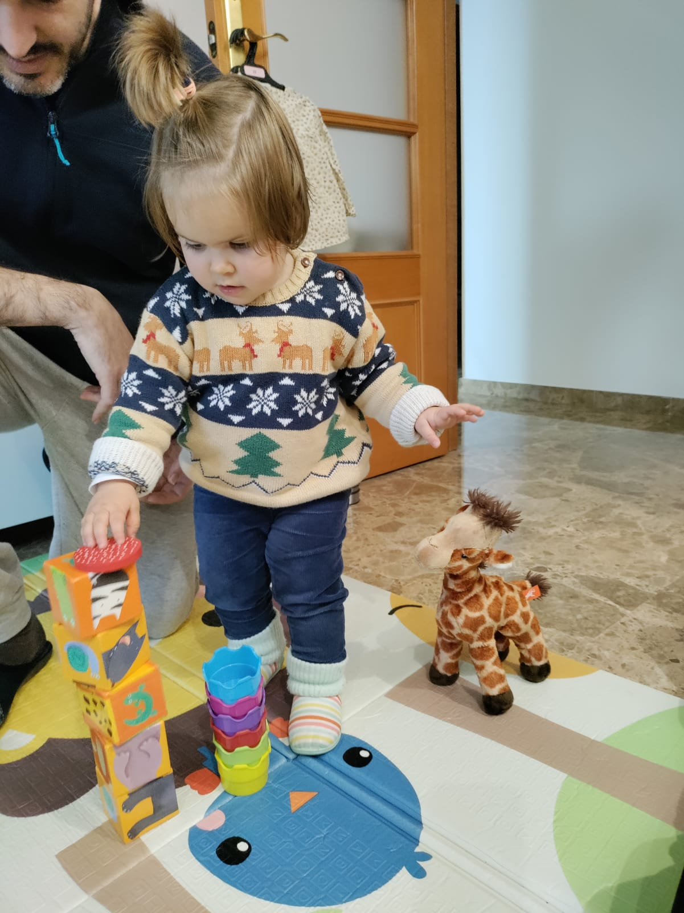
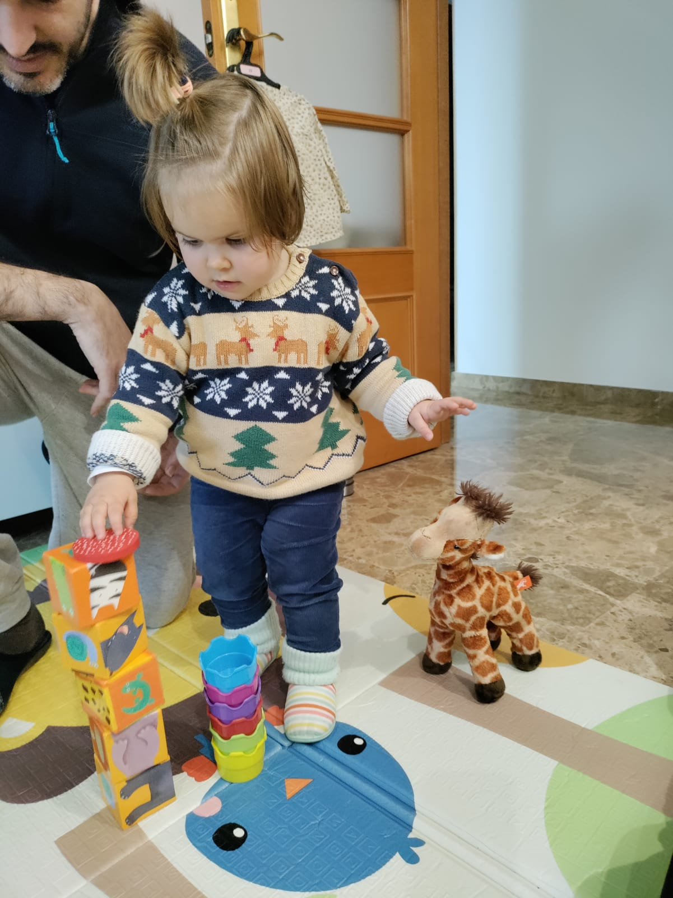
Al final Popy se encariñó mucho con Tita, normal... ¡Es mi mejor amiga!
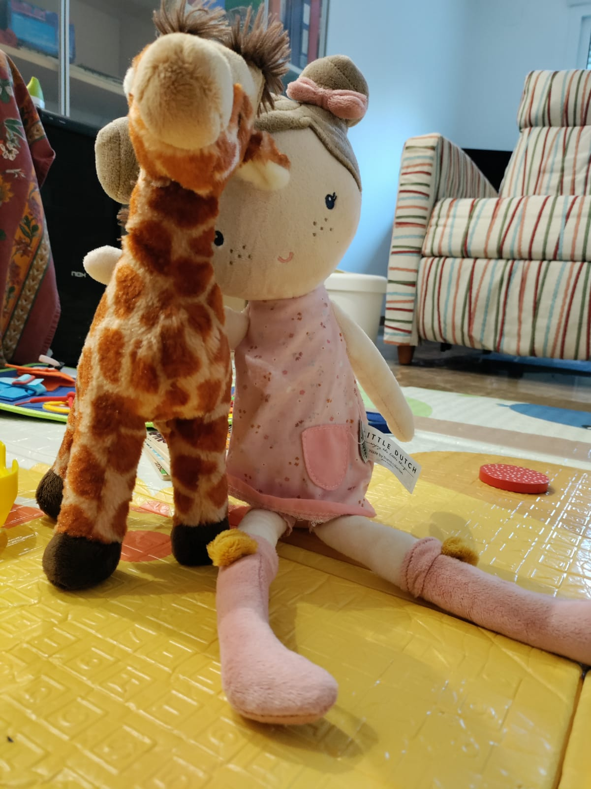Al final del día cenamos hamburguesas de lentejas ¡Qué ricas! Y mis papás pusieron en la tele la Cridà, nunca me dejan ver nada, pero... Es que ja estem en falles!